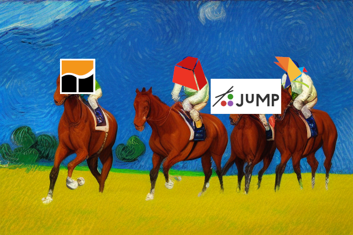

Not so fast, GAMS - a look at their model building benchmark

TL;DR¶
🫵 You shouldn't run a single model and call it a benchmark
🙊 JuMP is slower than pyomo? Really?
😤 At least the gurobipy code is not something I would write
Background¶
On the 4th of July, GAMS posted a "comparative analysis" (=benchmark) of GAMS versus JuMP, pyomo and gurobipy. There is a lot to unpack in that article, so let's get started:
The good¶
GAMS is actually pretty neat for model generation. And they are right when they say:
GAMS has proven to be a powerful optimization tool due to its use of relational algebra and efficient handling of complex variable definitions. Its mathematical notation also allows for intuitive and readable model implementations.
I have tried to "beat" GAMS two or three times in model generation speed using gurobipy, and it is pretty tough. The best I've gotten was around 10% slower than GAMS.
This makes sense, because GAMS has focused on this problem for decades, it is their main selling point.
Also, I appreciate that they made the code and data public, and it actually runs.
The questionable¶
However, the article makes a few statements that are questionable:
-
With general-purpose languages like Python and Julia, a straightforward implementation closely aligned with the mathematical formulation is often self-evident and easier to implement, read, and maintain, but suffers from inadequate performance.
This is really dicey. I am quite surprised that so far nobody from the Julia community has come out to challenge this statement. I will comment on the Python bit, specifically gurobipy: you can write very, very efficient gurobipy code that is highly readable. Consider for example this:
This is using efficient vector operations under the hood (think numpy but for variables) and is highly efficient. Yet, I would argue it is also incredibly readable.
On the other side, this is GAMS code from the benchmark:
This does not look pretty to me (let alone easy to debug).
- The "fast"
gurobipy
We see the same principle that applies to JuMP when it comes to modeling frameworks like GurobiPy and Pyomo with the underlying language Python.
The code they show for gurobipy is questionable, to say the least. Consider this snippet:
x = model.addVars(x_list, name="x")
constraint_dict_i = {i: [] for i in I}
constraint_dict_i.update(
{
i: list(j)
for i, j in itertools.groupby(sorted(x_list), operator.itemgetter(0))
}
)
model.setObjective(1, gpy.GRB.MINIMIZE)
model.addConstrs(
(gpy.quicksum(x[ijklm] for ijklm in constraint_dict_i[i]) >= 0 for i in I),
"ei",
)
model.update()
There is so much to unpack here, but in a nutshell: no respectable Python programmer would write code like this.
This does not change the fundamental statement of the article, I just don't think it is nice that the code itself is not reflecting what the language or the API can do.
JuMPis slower thanpyomo?
Eventually I will make a post about modeling frameworks, but pyomo is definitely not one that is known for its model building speed. On the flip side, JuMP was a core package for Julia from the start, and is very much written with speed in mind.
I don't know enough Julia to judge the code quality, but JuMP being factor 2-3 slower(!!) than pyomo makes no sense to me (plot from the article):

Side note: on several occasions, the article calls
gurobipya modeling framework. That's wrong (in my opinion), since the defining characteristic of a modeling framework is that you can use several solvers with it.gurobipyis simply the Python API for Gurobi, so it only supports Gurobi as a solver.
The problematic¶
The main problem with the article is that it uses a single example to make a general point. They even say this outright:
Other recent research also focuses on efficiency of model generation. The paper Linopy: Linear optimization with n-dimensional labeled variables compares some open source modeling frameworks but unfortunately chose a dense model (the knapsack problem) as a benchmark problem. In our experience dense models are extremely rare in practice and don’t really represent a challenge with respect to model generation.
"Unfortunately"? I agree that many MIPs we see in practice are typically sparse, but also most MIPs I have seen in practice don't have 5 indices that are combined in a random fashion.
That doesn't mean they shouldn't have done the study, or written the article. But as you may remember from my benchmarking article: "The first rule of benchmarking is: your test set defines your test results". This is why benchmarking is so hard: because finding a representative and robust test data set is really time consuming.
Fortunately, they are not saying anything I would call "completely wrong" in the article. But that doesn't mean they did a good job when creating their data from which they draw their conclusions.